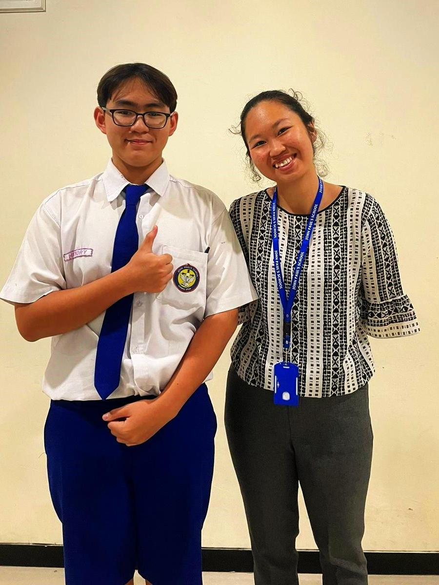

Pictures of Them

Ms. Franziska Cata Danirmala, S.Pd.

Mr. Benyamin Hadinata, S.Fil.

TEACHER
tee-cher: A multi-tasking educational rockstar who lives
to inspire and loves to encourage. They're kind of a big deal.
Happy Teacher's Day!
Happy Teacher’s Day! Even though I’m not one of your students, I want to take a moment to acknowledge and appreciate everything you do as a teacher at our school.
It’s clear that you work incredibly hard to create a positive and supportive environment for your students, and your dedication has a ripple effect throughout the entire school.
Your passion for teaching and commitment to helping students succeed inspire not only the ones in your class but everyone who has the privilege of seeing your work. Teachers like you are the heart of a school,
showing every day what it means to lead with patience, kindness, and an unwavering belief in the potential of each student. You’re not just shaping minds—you’re inspiring confidence, encouraging curiosity, and making a lasting impact on the lives of so many.
Even for those of us who haven’t had you as a teacher, your efforts and influence don’t go unnoticed. Thank you for all the time, energy, and care you invest in your role.
Our school is a better place because of your dedication, and I hope you feel truly celebrated today—you deserve it!
-Hendry 9A
Happy Teacher's Day! I just wanted to say how much I appreciate you being such a great sociology teacher. My views on the world has completely changed as a result of your classes;
at times, I even feel like I'm applying a sociological lens to my family gatherings!
I also need to apologize if I haven't always performed as well as I should have in your class. I'm sorry! I’m working on it and will try to do better.
I appreciate your perseverance and patience, even after I gave you several reasons to give up on me. The way you participate in our discussions and your enthusiasm for sociology make a big difference.
You've transformed what would have been an uninteresting topic into something interesting.
Have a wonderful Teacher's Day! I hope your day brings you as much happiness as a well-organised sociological study.
-Graciana 9A
Even if you haven't had an opportunity to teach me, we have met and greeted each other several times, as well as when you and I had conversations and played badminton.
We are connected sometimes, so I feel comfortable talking to you and feel really close to you. Maybe you have received letters like this a lot because I'm sure that last year's batch also gave you letters like this,
but the only thing I can say is two simple words that you have probably heard a lot, which are "thank you." Those words are very worthy of being given to you because you teach us not only knowledge but also the meaning of life.
You constantly boost our weak self-confidence with your thoughtful remarks. Having a teacher like you at this school makes us proud. We hope that one day we will be able to experience the value of the lessons you give as well.
We appreciate your participation in this school and your commitment to helping other students.
-Blessing 9A